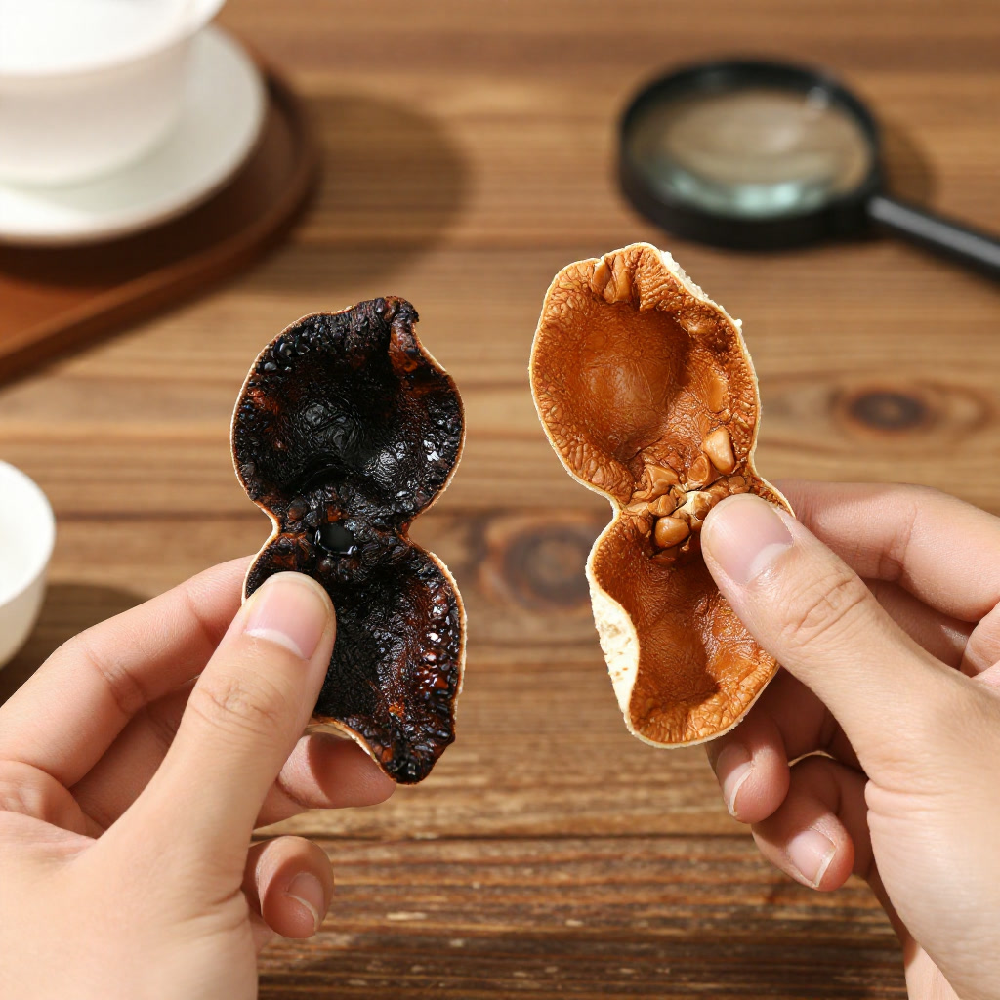
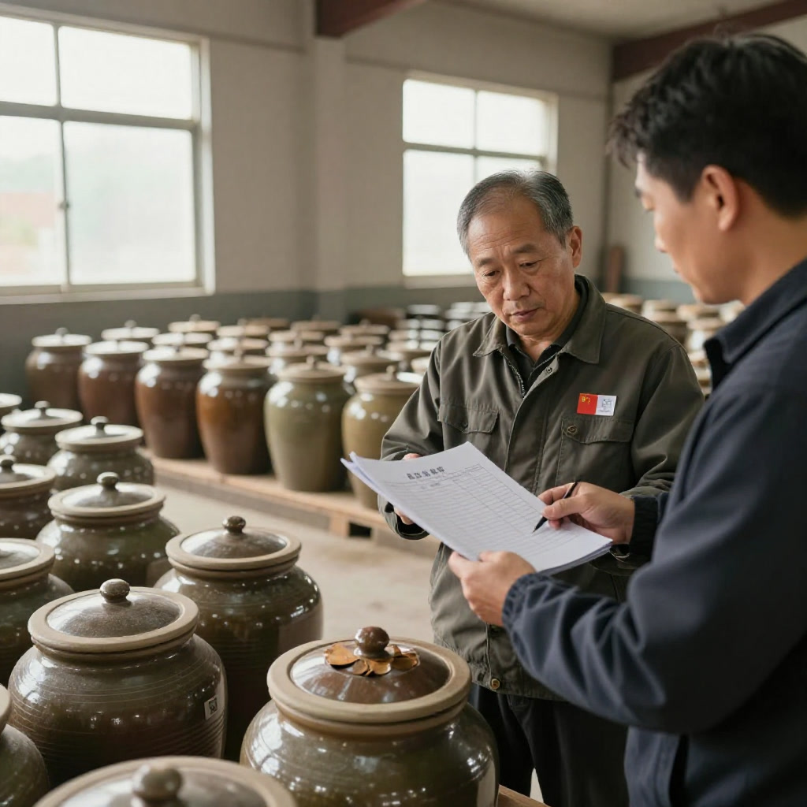
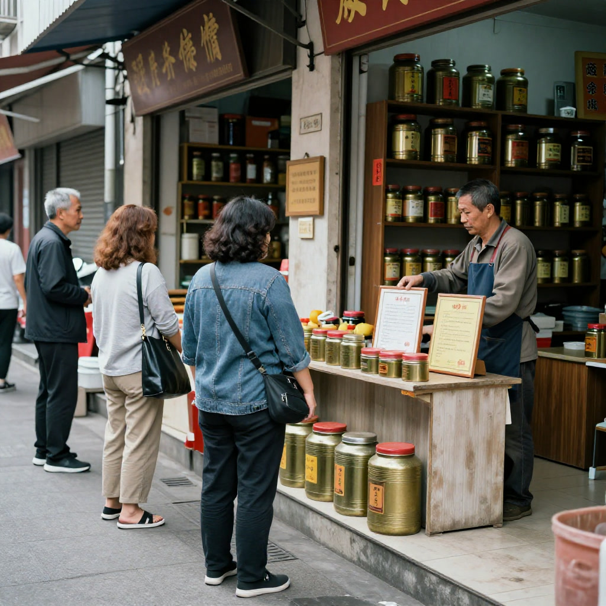

# 一片皮的信任——当造假风波遇上千年陈香
**资料说明｜故事化叙事、非真实采访逐字稿**
本文以茶室见闻为灵感作故事化重构，对话属叙事表达，唔系真实采访原话；年份、价格、行情描述为故事背景，唔构成投资或者收藏建议。
一、那罐来路不明的“老陈皮”
九月的清晨，新会的阳光穿过薄雾洒在天马村的柑园里，露水还挂在青黄交杂的茶枝柑上。滢滢姐刚从仓库出来，手机就响了。电话那头，是她的老客户阿强，语气里带着几分焦急。
“滢滢姐，我前几日喺网上买咗罐‘十五年陈皮’，价钱平得离谱，收到货一闻就觉得不对路。你帮我睇睇？”
阿强住喺深圳，平时最钟意煲汤养生，对陈皮情有独钟，但这次踩了雷。第二日佢亲自开车过来，拎住个精致铁罐。滢滢姐揭开盖子一闻，心里已经有数——香气单薄得可怜，带住一丝人工调配嘅甜腻，完全唔系正宗新会陈皮应有嘅复合陈香。
佢将一片皮摊喺掌心，指住内囊对阿强讲：“你睇，呢片内囊颜色深黑板结，完全冇自然脱落嘅痕迹。正宗嘅老陈皮，内囊会随住年份逐渐变成古铜或棕褐色，质地松化，有岁月嘅呼吸感。”
阿强叹咗口气：“我以为揾到笋货，点知系假货。”
滢滢姐拍拍佢膊头：“唔紧要，趁呢个机会，我带你行一转，由头教你识陈皮。”
二、银洲湖畔嘅风土密码
两人驱车嚟到新会核心产区。车窗外，西江同潭江喺银洲湖交汇，南海嘅咸潮时而涌入，造就咗呢片独一无二嘅水土——“三山环抱、咸淡交融、三水融通”。滢滢姐落咗车，弯腰抓起一把泥土，土壤黝黑松软，带住淡淡嘅咸腥味。
“你知唔知，新会陈皮嘅灵魂其实喺呢片土地里面？银洲湖流域嘅有机质同矿物质，加埋呢度独特嘅‘湿盆地’气候，先至孕育得出挥发油含量比普通产区高出四成以上嘅茶枝柑。呢啲都系大自然畀嘅印记，做唔到假嘅。”
佢带阿强行入一个果园，园主苏伯正指挥工人采摘。每年十一月到十二月，新会柑由青转红，果皮橙黄饱满，油室密密麻麻，呢个时候摘下嚟嘅果实先至够资格成为陈皮嘅原料。
“滢滢姐讲得啱。”苏伯听到谈话，行埋一齐，“我哋啲柑树种咗几十年，每年收成都要睇天食饭。啲果跟住‘大年小年’嘅规律生长，大年多啲，小年养养地力，急都急唔嚟。你话𠮶啵‘一个月速成’嘅工艺皮，同我哋呢啲靠日晒夜露慢慢嚟嘅嘢，根本系两样嘢。”
阿强望住树上挂满嘅新会柑，油亮嘅果皮喺阳光下闪闪发光。佢忽然明白，陈皮嘅价值唔单止喺时间，更喺呢片土地赋予嘅道地基因。
三、四步识皮：由外行变内行嘅窍门
滢滢姐喺佢哋嘅工作室摆开几片唔同年份、唔同来源嘅陈皮，为阿强上一堂鉴别课。
第一步：望。“正宗新会陈皮，外皮油室饱满、分布均匀，有三条刀痕开出嘅三瓣。年份越久，颜色由鲜红转为棕褐、棕黑，但色泽自然，纹理清晰。”佢拎起阿强带嚟𠮶片假皮对比，“做旧嘅皮，颜色过于统一，油室稀疏甚至模糊，一睇就露馅。”
第二步：闻。滢滢姐撕下一小片正宗十年陈皮递畀阿强，“你闻下。”阿强闭上眼深吸一口，初时系淡淡柑香，继而涌出醇厚嘅陈香，尾调隐隐带住药香，层次丰富而悠长。“假皮嘅香气单薄、刺鼻，有时甚至带住酸闷味或者人工香精味，同正宗嘅复合香差天共地。”
第三步：摸。“干仓陈化嘅老陈皮，手感干爽清脆，轻轻一拗就断，断面整齐。而湿仓做旧嘅皮，因为受过人为加湿，手感偏软，有时甚至带湿意。”阿强接过滢滢姐递嚟𠮶片真品，果然一拗即碎，声音清脆。
第四步：尝。滢滢姐煮水泡茶，两片陈皮分别放入。正宗𠮶壶汤色金黄透亮，入口醇和甘甜，喉咙回甘带住一丝清凉；假皮𠮶壶颜色混浊，味道单薄酸涩，饮完喉咙有种“锁喉”嘅不舒服感。
“原来差别咁大！”阿强恍然大悟。
滢滢姐笑住补充：“记住，陈皮嘅价格都系筛子。太便宜嘅‘高年份’皮，绝对有问题。行内话讲得好——‘三年成皮，十年成宝’，时间点都偷唔到。”

四、千年陈香里嘅守护
讲到陈皮嘅历史，滢滢姐眼神变得温柔而深远。
“陈皮嘅故事，可以追溯到汉代嘅《神农本草经》，当时以‘橘柚’之名入药。唐代《食疗本草》先至第一次见到‘陈皮’两个字。到咗明清时期，新会陈皮已经系宫廷御用嘅珍品，清宫用药对产地有严格要求，必须用新会出品。乾隆年间嘅《广州府志》写得清清楚楚——‘橘皮入药以广陈皮为贵，出新会者最良’。”
佢行到墙边𠮶排陈化架前，指住一排排竹编箩筐：“我老窦𠮶代就开始做呢行，佢成日讲，陈皮系‘和药之首’，同补药一齐用就补，同泻药一齐用就泻。以前穷嘅时候，新会人屋企都会存啲陈皮，唔系为咗升值，系为咗一家大细嘅健康。呢种传统，系刻喺骨子里面嘅。”
阿强望住仓库里一排排陈化架，离地离墙离顶存放，通风良好，温湿度适中。滢滢姐解释：“收藏陈皮讲究‘三离’——离地、离墙、离顶，要畀佢呼吸，唔可以焗住。每年天气好嘅时候仲要攞出嚟翻晒，让阳光同微风继续为佢‘养老’。”

五、乱象之中，守好每一片真诚
回程嘅路上，阿强望住车窗外飞驰而过嘅柑园，若有所思。
“滢滢姐，最近新闻话造假好多，你哋做正嘢嘅人会唔会好难做？”
滢滢姐望住前方，语气平静而坚定：“的确唔容易。啲‘工艺皮’一个月做到外表似三年、五年，成本七十蚊就敢当正宗卖几百几千，暴利到离谱。有啲人攞广西嘅柑皮冒充新会货，甚至用椪柑皮鱼目混珠。消费者唔识，就容易中伏。”
佢顿咗顿，转而讲：“但我哋始终相信，真嘅嘢经得起时间考验。最近政府打击得严，查处咗好多违规商户，又推紧数字化溯源系统，每片正宗新会陈皮都可以源头可查。呢啲都系好事。”
阿强点点头：“我以后只信你哋呢啲有溯源、有口碑嘅渠道。”
“聪明。”滢滢姐笑住赞佢，“选陈皮同选人一样，贵喺真诚。拣有清晰溯源、权威检测报告嘅品牌，先至系对自己负责。正宗新会陈皮嘅橙皮苷、挥发油含量都有标准，数据唔会呃人。”

六、结语：一片陈皮，一份信任
送别阿强后，滢滢姐独自坐喺仓库门口，夕阳嘅余晖洒落喺𠮶片金黄色嘅陈皮堆上。空气中弥漫住淡淡嘅柑香同陈香，呢股味道佢闻咗几十年，依然觉得心安。
一块好陈皮，要经历风霜、日晒、岁月沉淀，先至炼成醇厚。一个好产业，亦都系咁——要经历诱惑同考验，先至守得住初心。
佢记得老窦临终前同佢讲嘅一句话：“做陈皮，即系做良心。一片皮假咗，就系一世名假咗。”
呢份坚守，穿越千年，依然喺银洲湖畔嘅风里飘香。
【滢滢姐温馨提示】选购陈皮小锦囊
1. 锁定核心产区：优先选择银洲湖流域嘅梅江、天马、茶坑、东甲等一线产区，水土条件独一无二。 2. 睇年份唔追年份：日常饮用三至八年陈皮性价比最高；十年以上适合资深玩家收藏，勿贪图高年份。 3. 坚持“四步鉴别法”：望外形、闻香气、摸质感、尝滋味，缺一不可。 4. 查溯源验身份：选择有数字化溯源系统同权威检测报告嘅产品，源头可查先至饮得安心。 5. 储存要“三离”：离地、离墙、离顶，保持通风干爽，每年适时翻晒，让陈皮继续呼吸成长。
一片陈皮，承载嘅唔单止系药食同源嘅智慧，更系一方水土嘅诚信同守护。愿你手中𠮶片陈香，真材实料，岁月可鉴。
使用提示
本文只作一般资料整理，不构成食品安全、营养、收藏投资或者医疗建议。选购、保存或者食用陈皮，应向正规渠道及有关主管部门核实。如有身体不适或者正在接受治疗，请咨询合资格专业人士。唔好将陈皮当成治疗方案。
常见问题
Q1：点样一眼分出做旧皮同自然陈化老皮？
望内囊同油室：自然老皮内囊古铜或棕褐、质地松化，油室饱满分布均匀；做旧皮内囊深黑板结、油室稀疏模糊，颜色过于统一。仲要结合闻、摸、尝一齐判断。
Q2：银洲湖水土同陈皮品质有咩关系？
故事入面提到西江、潭江喺银洲湖交汇、南海咸潮涌入，形成咸淡交融水土同湿盆地气候，呢个系茶枝柑道地性的风土背景，属于故事化转述，唔系检测结论。
Q3：望闻摸尝四步边一步最紧要？
四步缺一不可：望睇外形油室，闻辨香气层次，摸分干爽定湿软，尝试汤色滋味。太便宜嘅高年份皮一定要提高警惕，最好查埋溯源同检测报告。
Q4：屋企存皮点样先唔发霉？
记住三离——离地、离墙、离顶，保持通风干爽，每年天气好时适时翻晒，唔好用密封胶袋焗住。具体存法以产品标示同正规渠道指引为准。
Q5：文中阿强同苏伯嘅对话系真实采访吗？
唔系。本文以茶室见闻为灵感作故事化重构，对话属叙事表达，唔应视为任何真人的原话；年份、价格、行情描述为故事背景，唔构成投资或者收藏建议。
来源
1. 本文为原创故事，历史背景综合《神农本草经》《食疗本草》《广州府志》等公开典籍转述。 2. 新会陈皮选购、保存的一般方法，以产品标示、正规渠道及有关主管部门指引为准。